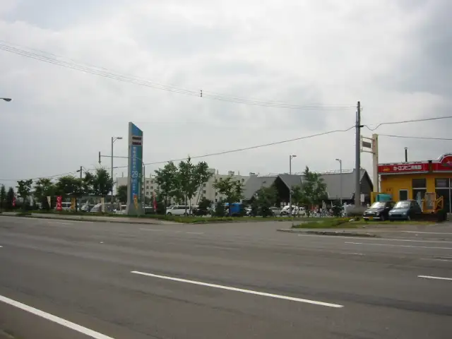
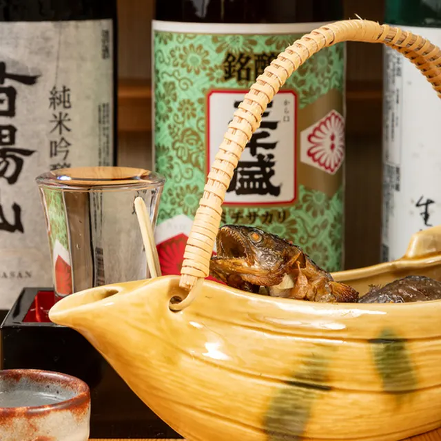
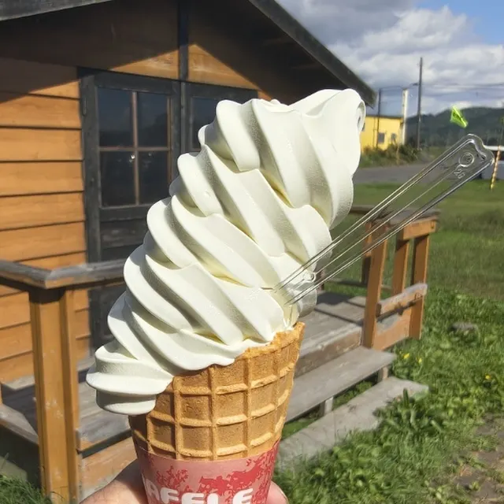
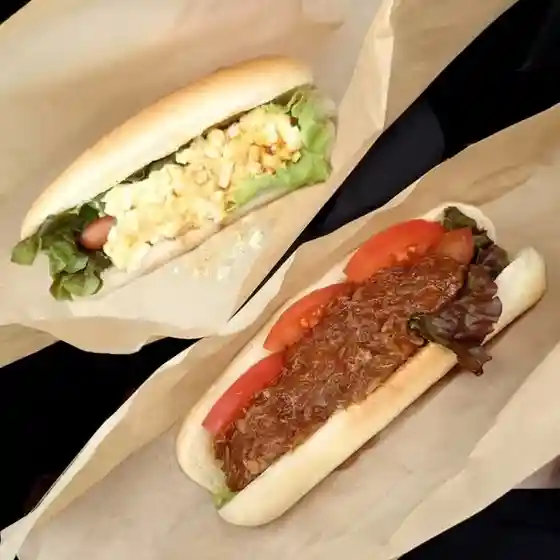
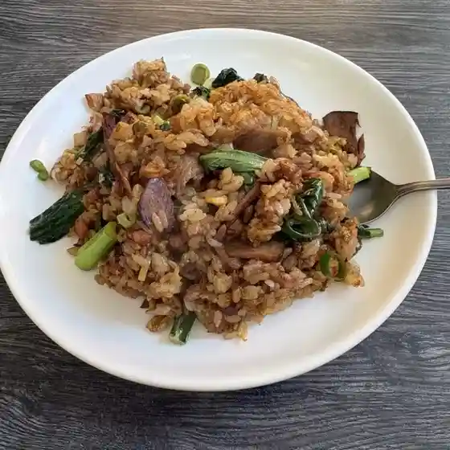
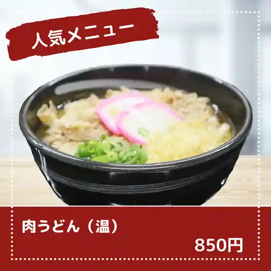
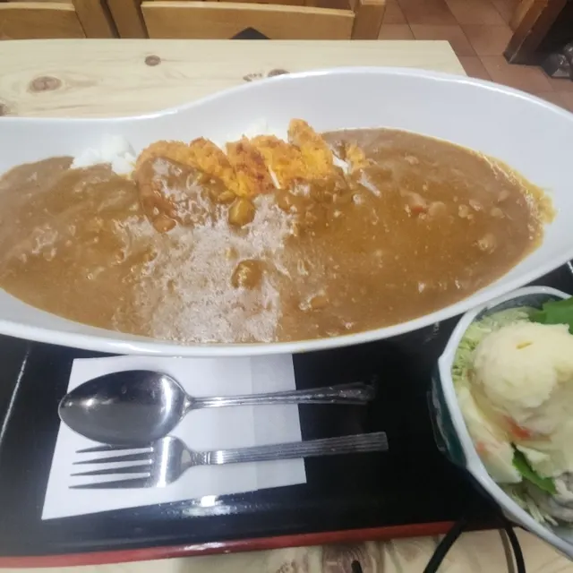
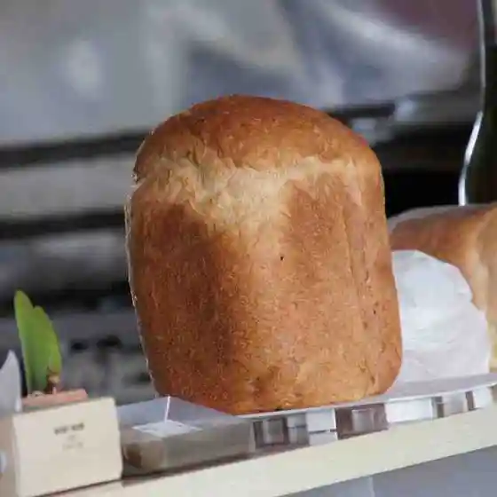

Naie
Naie · Hokkaido
Naie
Highlighted on the Hokkaido map.

Stay
No bookable places to stay found in Naie — nearest options in Sunagawa.
Dining
郡上料理五平

Gujou Ryouri Gohei
ナイエ ミルクファクトリー

Naie Mirukufakutorii
nico nico

Nico Nico
京華楼

Keika Rou
桔梗や

Kikyou Ya
鳥喜

Tori Ki
吉野鮨

Yoshino Sushi
のらねこまんま

Noranekomanma
エーコープ ないえ店
Eekoopu Naie Mise
SHANTi 昭和お茶の間奈井江店
Shanti Shouwa O Chanoma Naie Mise
釜めしままや
Kama Meshimamaya
おむすび 満
Omusubi Man
セブンイレブン 奈井江町店
Sebun'Irebun Naie Machi Mise
パウゼ
Pauze
ゲバラ
Gebara
民謡
Minyou
道の駅 ハウスヤルビ奈井江
Michi No Eki Hausuyarubi Naie
dining bar lantern
Dining Bar Lantern
からまつ園 本店
Karamatsu Sono Honten
松島屋旅館
Matsushima Ya Ryokan
Cafe 29.2
Cafe 29 . 2
みみずく
Mimizuku
新奈井江カントリークラブ
Niina I Kou Kantoriikurabu
セイコーマート 奈井江店
Seikoomaato Naie Mise